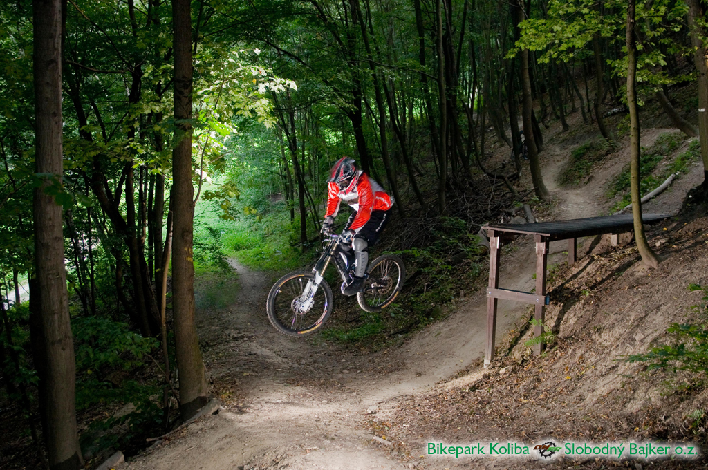
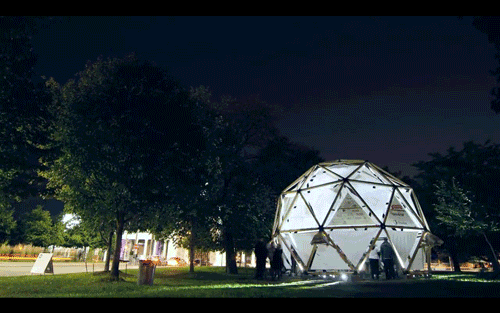
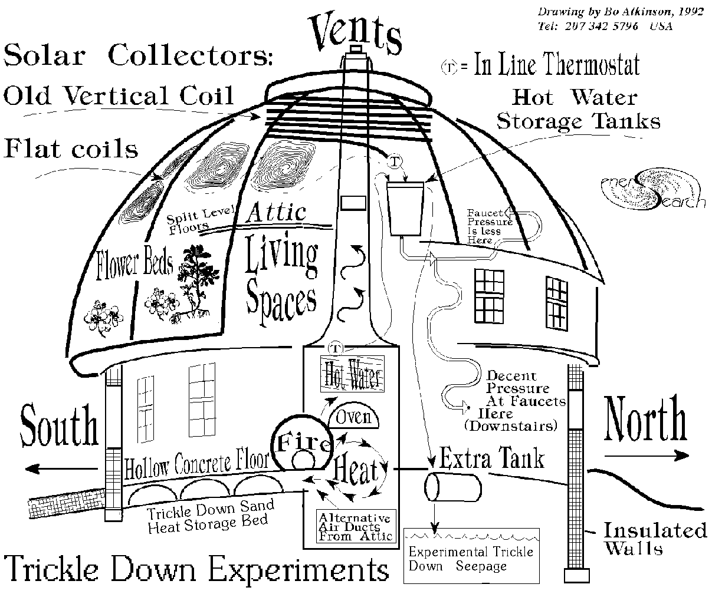

Hackerdome will be one of very first true hackerhouse residency (coliving)
Great shelter with friendly-apes and secure food supply for your great ideas located in Central Europe, Slovakia, Bratislava
Literally, it would be house with dome on top of it.
HackerDome is now WorkInProgress, opening 2016⁄2017, but you can contact me for beta-run. Timetable is on the end of page
Features
Fast Internet (500⁄30 Mbit) (now 50⁄5)
Free
- Club-Mate (20mg/100ml)
- Flora-Power (18mg/100ml)
- Nootropics (??? :D)
- Dark chocolate ~85%+ (source of Sirtuin)
- Synectar.sk (local soylent)
Full-stack kitchen (WiP)
Pet-friendly space
Shared (e)bike, (e)car and unicycle (e part is planned)
Trip locations near HackerDome
Local Bratislava hidden hipster locations
Sky walk (Stezka v oblacich) (~160mins car)

- Bikepark Koliba (~10min on bike)
- two trails (map)
- w/ chair lift
{kind=link}

- Devin Castle (~20min by car)
- near is Sandberg
- near is “Weiterov Lom”
- Brno Observatory and Planetarium (1 hour drive car/train)
Urban Exploration
- Razsochy (unfinished hospital from 80s) (~10mins walk)
- Unfinished waterworks from 1970 over the Old Lamač at the place of former quarry (15mins walk)
- Rocket military base built in 80ties of the 20th century. (~40mins bike)
- Top of Devínska Kobyla. Its peak elevation is 514 m AMSL
- rocket system ground – air S 125 Neva, known as SA-3 GOA. System was developed by company Lavočkin & Gruškin OKB and manufactered by Fakel MKB.
- 20 objects in area
- Cavern Kamzik 6
- There like dozens bunkers in local hills from WW1
Local community groups
- Meetup groups in Bratislava
- Technology
- Rubyslava
- Webelement
- Nodeschool Bratislava
- Node.js meetup
- IPFS meetup
- map of Slovak start-up ecosystem
- Techwalks in near forest (let’s form group for walks on evening-midnight for 2-3 hours into deep woods)
Bike
Hackerspaces around
- Progressbar.sk @ Bratislava (local)
- Metalab.at @ Vienna
- Base48.cz @ Brno
- ParalelniPolis.cz @ Prague
- Brmlab.cz @ Prague
- Labka.cz @ Ostrava
- V01D.sk @ Kosice
- H.A.C.K. @ Budapest
- List of Active hackerspaces
Fablabs
- Fablab.sk
- Fablava.sk (local digital manufacture network)
- LabCafe - in old market hall, downtown Bratislava (Q1 2016)
Media/Art
Goodies
- Tesco 6-24 (5min bike)
- Pharmacy 8-20 (5min bike)
- Gas station 24⁄7 (5min bike)
- McDonalds 24⁄7 (5min bike/2min car)
- Kaufland 7-22 (10min walk)
- Pharmacy 8-20 (5min bike)
- Option to buy/sell Euros for Bitcoins/Ethereum in low volumes
Mobile Dataplans
- Dataplans
- O2
- Orange
- Swan/4 LTE (5€/100GB/mo)
- There are other virtual operators who offers fine prices for dataplans
Bratislava
- General knowledge about Bratislava
- Eurotrip scene about Bratislava (everything for nickel :D)
- Visit Bratislava (from local tourist agency)
Weather
Equipment
- Standing desk Skarsta
- Media
- Projector
- Chromecast 2
- Telly 55” for terminal sessions
- Some 24” monitors
- Desks
- Lot of pallets (let’s build something?!)
- Great backyard for ideas with fireplace
- Infrastructure
- Mikrotik RB951G-2HnD
- Ubiquiti AP-AC Pro Gen2 (2,4 GHz: 3×3; 5 GHz: 3×3)
- Waiting for Turris Omnia
- Hardkernel
- Odroid X2 (MarkOne)
- C1+ & C2 (WiP)
- Floorplan
- 6 double/two bed
- 2 living-rooms
- 2 bathrooms
- 2 basement rooms
- 2 garages
- 1 laundry room
- 1(2) dome(s) on the roof (WiP)
Workshops
- We prefer hackers, who have experience and can do some workshops in
- Image recognition (OpenCV,..)
- Cryptography
- Distributed systems
- Crafting (wood,..)
- Knitmeets or making origami? :D
- ..?
City Transportation
- We got Uber & Liftago (yay!, costs like 3-7€ to Downtown)
- By bus, you are in Downtown in 12 mins, costs like 0.70€
- Bus stop zone in front of HackerDome
- Bus stop Húščavova (7min walk)
- Bus stop Pridánky (5min walk)
- Night buses (every hour)
- N21 from Central Railway Station
- N37 from Central Railway Station
- By bike you are in Downtown in 20mins
Cities near
- Vienna, Austria (1 hour by car/train)
- Brno, Czech Republic (1 hour by car/train)
- Budapest, Hungary (2 hours by car/train)
- Prague, Czech Republic (3 hours by car/train)
Airports near
- Bratislava (BTS), Slovakia (1⁄2 w/ Uber/Liftago)
- Vienna (VIE), Austria (3⁄4 hour bus ride for 5€)
- Budapest (BUD), Hungary (2 hours train/ride)
- Prague (PRG), Czechia (3 hours train/ride)
- Book your flight now i.e from Berlin to Bratislava (low, for 10€)
- Book your flight now i.e from London to Bratislava (low, 10-30€)
- Book your flight now i.e from Hamburg to Vienna (low, 30-60€)
- Book your flight now i.e from Berlin to Vienna (40-60€)
(planned) Hyperloops near Bratislava
- Bratislava to Vienna in eight minutes (Hyperloop)
- Bratislava to Budapest in ten minutes (Hyperloop)
Options to stay
Micro-term
- one night crash
- staying for 1-3 days, like hackercouch
- just support us buying Club-mate/Flora-Power at place, you are welcome!
Mid-term
- Plan to stay for 1-12 weeks, great! :)
- Get in touch with local community
Long-term
- 12+ weeks
- So you really like Bratislava, noice :)
Do you want in?
We accept payments in Bitcoin, Ethereum and also in analog money.
Who I’m
Founder of Progressbar hackerspace. It all started before summer 2010 :)
Contact
- Ask me something about HackerDome at Reddit
- Ask me something about HackerDome at Github
- join IRC #hackerdome @ Freenode or use webchat
- FB Subscribe
- Keep in touch, yangwao at freenode or try catch me ybdaba plus hackerdome at gmail dat com
See me / meet me
Some click-baits
Hacker-like link-toolkit
(Digital)Nomad-like
- Techsquat (in Czech Republic Brno & Prague)
- Opendoor.io
- WeWork
- Nomadhouse
- The Caravanserai
- Coconat-space
Media
Concepts
- Platonic Solids
- Digitalmorphogenesis
- Material intelligence
- Achim Menges
- Sean Ahlquist
- Free State of Fiume
- Phalanstère
- Kibbutz
- Developing the Familistère
- Baugruppen
Why Geodesic dome
History
- I heard, Buckminister concept is hyper-obsolete from 60s, but it still works, there is even modern like hexayurt concept easier to construct
- Geodesic dome
- Montreal Biosphère
Authors
How can dome look like?
 
Crazy shit in the end
BuckMinster Fuller Meets Transformers
BuckMinster Fuller Meets Transformers (gif) BuckMinster Fuller Meets Transformers (gif)
{kind=link}
{kind=link}
If IPFS has some troubles, here is latest revision of web
Some external photos
- Me in Bratislava, like tourist
- My first NodeSchool Bratislava
- CCCamp2015
- Dildo workshop, maybe
- Hexagons with six lights
(local) Music
We love 8bit music! Hope you do too!
Timetable for HackerDome
So people recently asking me, if it’s WiP, what are plans?
- Spring/2016 Replace/Upgrade heat distribution system
- Q2/2016 Upgrade bathroom1
- Q3/2016 Switch kitchen with bedroom
- Q4/2016 Upgrade windows on first floor
- Summer/2016 Need fix insulation of house. Now it costs like 150€ monthly for gas. Pretty high and even not going on full-throttle.
- Autumn/2016 Roof. This is part where geodesic dome come in play.
- What comes next, at least, sponsors are welcome, hackerdome is just small step ;)